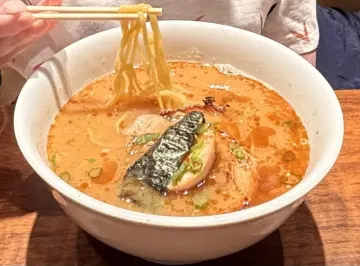
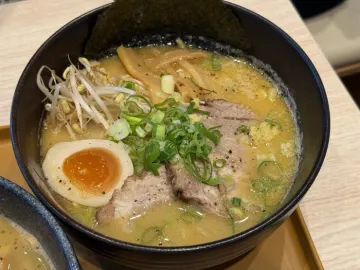
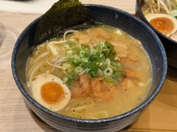
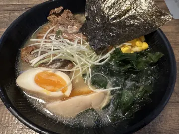

Paras ramen Helsingissä: näin löydät hyvän kulhon
Helsingin ramen-tarjonta on kasvanut parista nuudelibaarista kunnolliseksi valikoimaksi, ja siksi keskinkertaiseen kulhoon on helpompi päätyä kuin koskaan. Näin arvioit ramenia kuin kanta-asiakas ja löydät suosikkisi nopeasti.
Tunne liemesi

”Paras ramen” riippuu siitä, mistä pidät. Useimmat Helsingin ramen-paikat ovat erikoistuneet yhteen tai kahteen näistä:
| Tyyli | Liemi | Tilaa, jos… |
|---|---|---|
| Tonkotsu | Tuntikausia keitetyistä porsaanluista tehty kermainen, samea keitto | haluat jotain täyteläistä ja täyttävää |
| Shoyu | Kirkas kana- tai porsasliemi soijakastikkeella maustettuna | haluat klassista, suolaisen täyteläistä Tokio-tyylistä ramenia |
| Shio | Kevyt, kirkas suolalla maustettu liemi | haluat maistaa itse liemen |
| Miso | Liemi, johon on sekoitettu fermentoitua soijapapupastaa | ulkona on −15 °C |
| Vegaaninen / sieni-dashi | Kombu- ja shiitake-liemi, joskus soijamaidolla | et syö lihaa tai haluat jotain kevyempää |
Mikä erottaa loistavan kulhon kelvollisesta
- Liemessä on syvyyttä. Sen pitää maistua pitkään haudutetulta, ei liemijauheelta ja suolalta.
- Nuudelit sopivat keittoon. Ohuet, napakat nuudelit tonkotsuun; kiharammat ja paksummat misoon. Jos pidät napakoista, pyydä katame.
- Kananmuna (ajitama) on marinoitu ja keltuainen hyytelömäinen. Siitä näkee nopeasti, kuinka huolella keittiössä tehdään.
- Chashu on mureaa ja paahdettua, ei kuivia viipaleita paketista.
- Kulho tulee nopeasti ja kuumana. Ramen on tarkoitettu syötäväksi heti. Ryystäminen on sallittua.
Savory Scoresin datasta
Helsingin parhaiksi arvioidut ramenit
| Kuva | Annos | Ravintola | Pisteet | Autenttisuus | Viimeksi arvioitu |
|---|---|---|---|---|---|
 | Pork tonkotsu ramen | Beijing8 | 10 | 9 | 3/2026 |
 | Miso ramen w/ chashu pork | MUJI Ravintola | 8.5 | 9 | 7/2025 |
 | Miso ramen | Tokumaru Tripla | 8 | – | 9/2026 |
 | Ebishio ramen | Tokumaru Tripla | 8 | – | 9/2026 |
 | Tonkotsu ramen | Ravintola Kamome | 8 | 6 | 11/2023 |
| R7. Paitan Ramen - Pork | Noodle Sama | 7 | – | 3/2024 |
Perustuu 16 arvioon 12 paikassa Helsingin seudulla, tilanne lokakuussa 2026. Pisteet ja autenttisuus ovat keskiarvoja kymmenen pisteen asteikolla. Useimmilla annoksilla on toistaiseksi vain yksi tai kaksi arviota ja ruokalistat muuttuvat, joten katso ajantasainen järjestys sovelluksesta. Söitkö paikassa, jonka pitäisi olla tällä listalla? Arvioi se Savory Scoresissa.
Näin löydät Helsingin parhaan ramenin Savory Scoresilla
- Hae ”Ramen” Ravintolat-välilehdeltä. Näet kaikki Helsingissä arvioidut ramenit kuvineen ja keskiarvopisteineen.
- Vaihda Kaikkien arvostelujen ja omiesi välillä ja vertaa yleisön suosikkia omaasi.
- Arvioi jokainen syömäsi kulho vastaamalla yhteen kysymykseen: Tilaisitko sen uudestaan? En, Ehkä vai Joo.
- Hienosäädä liukusäätimellä. Savory Scores näyttää aiemmat ramen-pisteesi arvioinnin aikana, joten 8 tarkoittaa sinulle aina samaa.
- Muutaman kulhon jälkeen sinulla on oma ramen-top-lista, ja tiedät tarkalleen, minne mennä seuraavaksi.
Ramen on myös yksi suosituimmista japanilaisista lounaista Helsingissä. Useissa paikoissa on arkilounastarjouksia.
Löydä suosikkisi Helsingistä. Savory Scores on ilmainen iPhonelle ja iPadille: hae annosta, vertaa kaikkia kaupungin versioita ja arvioi se yhdellä napautuksella.